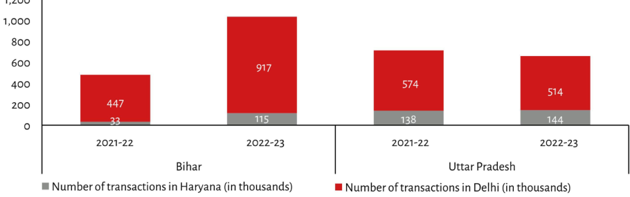

| State | Year | Number of transactions in Haryana (in thousands) | Number of transactions in Delhi (in thousands) | Total Transactions (Estimated/Calculated Sum) | | :--- | :--- | :--- | :--- | :--- | | Bihar | 2021-22 | 33 | 447 | ~480 | | Bihar | 2022-23 | 115 | 917 | ~1,032 | | Uttar Pradesh | 2021-22 | 138 | 574 | ~712 | | Uttar Pradesh | 2022-23 | 144 | 514 | ~658 |
